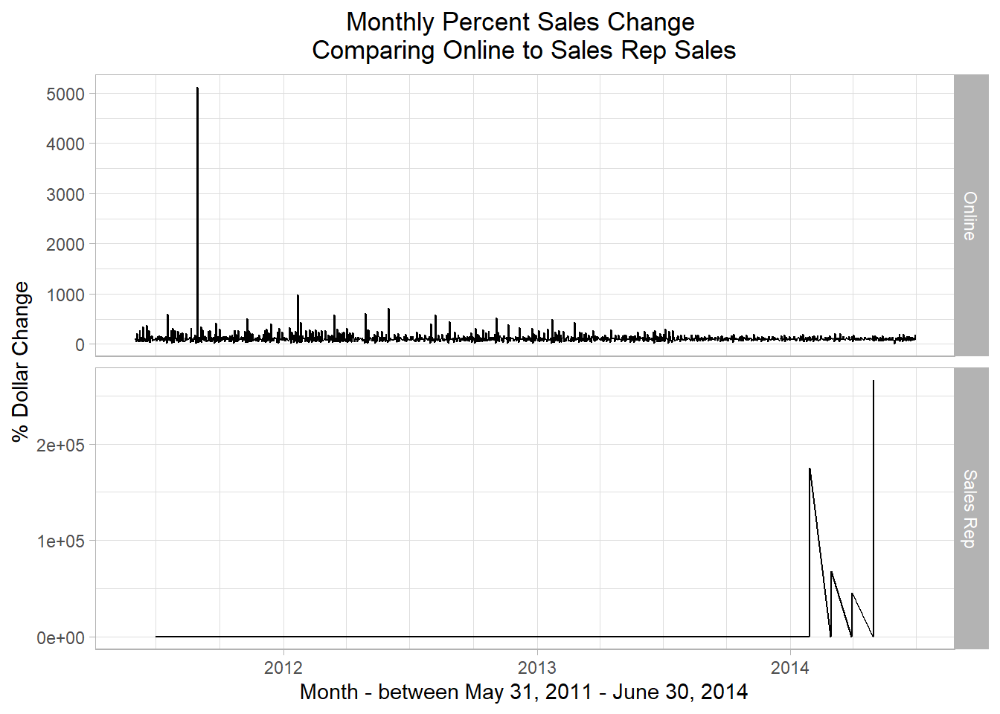

Chapter 8 Exploring a Single Table (asking Business Questions)
This chapter demonstrates how to:
- Begin the process of investigating a database from a business perspective
- Dig into a single Adventureworks table containing sales data
- Investigate the data from a business value perspective
The previous chapter has demonstrated some of the automated techniques for showing what’s in the table using specific R functions and packages. Now we demonstrate a step-by-step process of making sense of what’s in a table from a business perspective. We explore one table, illustrating the kind of detective work that’s often involved in understand the meaning of the data in a single table. We’ll investigate the salesorderheader table in the sales schema in this example with an eye on the AdventureWorks busieness’ sales.
For this kind of detective work we are seeking to undertand the following elements separately and as they interact with each other (and they all do):
- The data that’s stored in the database
- The overall structure of the data (how different tables connect with each other and affect how to interpet each other)
- How the data is entered at a day-to-day level to represent business activities
- How the business itself is changing
8.1 Setup our standard working environment
Use these libraries:
library(tidyverse)
library(DBI)
library(RPostgres)
library(glue)
require(knitr)
library(dbplyr)
library(sqlpetr)
library(bookdown)
library(here)
library(lubridate)
library(scales) # ggplot xy scales
theme_set(theme_light())Connect to adventureworks:
8.2 The overall AdventureWorks sales picture
On an annual basis, are sales dollars trending up, down or flat? We begin with total revenue and number of orders at different levels of detail.
You will find that many columns have the same name in an enterprise database. For example, in the adventureworks database, almost all tables have columns named
rowguidandmodifieddate.Naming columns carefully (whether retrieved from the database or calculated) will pay off as our queries become more complex. Using
sohto tag statistics that are derived from thesalesorderheadertable is one example of careful naming. A naming convention that reminds you of the original source of a column is a matter of applying some logic to how things are named; you, future you, and your collaborators will appreciate it although different naming conventions are completely valid.In the following example
sohappears in different positions in the column name but it is easy to guess at a glance that the data comes from thesalesorderheadertable.
8.3 Annual sales
annual_sales <- tbl(con, in_schema("sales", "salesorderheader")) %>%
mutate(year = substr(as.character(orderdate), 1, 4)) %>%
group_by(year) %>%
summarize(
min_soh_orderdate = min(orderdate, na.rm = TRUE),
max_soh_orderdate = max(orderdate, na.rm = TRUE),
total_soh_dollars = round(sum(subtotal, na.rm = TRUE), 2),
avg_total_soh_dollars = round(mean(subtotal, na.rm = TRUE),2),
soh_count = n()
) %>%
arrange(year) %>%
select(year, min_soh_orderdate, max_soh_orderdate, total_soh_dollars,
avg_total_soh_dollars, soh_count) %>% show_query %>%
collect() ## <SQL>
## SELECT "year", "min_soh_orderdate", "max_soh_orderdate", "total_soh_dollars", "avg_total_soh_dollars", "soh_count"
## FROM (SELECT *
## FROM (SELECT "year", MIN("orderdate") AS "min_soh_orderdate", MAX("orderdate") AS "max_soh_orderdate", ROUND((SUM("subtotal")) :: numeric, 2) AS "total_soh_dollars", ROUND((AVG("subtotal")) :: numeric, 2) AS "avg_total_soh_dollars", COUNT(*) AS "soh_count"
## FROM (SELECT "salesorderid", "revisionnumber", "orderdate", "duedate", "shipdate", "status", "onlineorderflag", "purchaseordernumber", "accountnumber", "customerid", "salespersonid", "territoryid", "billtoaddressid", "shiptoaddressid", "shipmethodid", "creditcardid", "creditcardapprovalcode", "currencyrateid", "subtotal", "taxamt", "freight", "totaldue", "comment", "rowguid", "modifieddate", SUBSTR(CAST("orderdate" AS TEXT), 1, 4) AS "year"
## FROM sales.salesorderheader) "dbplyr_001"
## GROUP BY "year") "dbplyr_002"
## ORDER BY "year") "dbplyr_003"## # A tibble: 4 x 6
## year min_soh_orderdate max_soh_orderdate total_soh_dolla…
## <chr> <dttm> <dttm> <dbl>
## 1 2011 2011-05-31 00:00:00 2011-12-31 00:00:00 12641672.
## 2 2012 2012-01-01 00:00:00 2012-12-31 00:00:00 33524301.
## 3 2013 2013-01-01 00:00:00 2013-12-31 00:00:00 43622479.
## 4 2014 2014-01-01 00:00:00 2014-06-30 00:00:00 20057929.
## # … with 2 more variables: avg_total_soh_dollars <dbl>, soh_count <int64>Both 2011 and 2014 are shorter time spans than the other two years, making comparison across the years more difficult. We might normalize the totals based on the number of months in each year, but we first graph total dollars:
8.3.1 Total sales by year
min_soh_dt <- min(annual_sales$min_soh_orderdate)
max_soh_dt <- max(annual_sales$max_soh_orderdate)
ggplot(data = annual_sales, aes(x = year, y = total_soh_dollars)) +
geom_col() +
scale_y_continuous(labels = scales::dollar_format()) +
labs(title = paste("Adventure Works Sales Dollars by Year\n ",
min_soh_dt, " - ", max_soh_dt),
x = "Year",
y = "Sales $")
From 2011 through 2013, sales are trending up. Are sales dollars for 2014 really down, is it a shorter year (are sales seasonal)? To see if the sales dollars are seasonal, we will drill in and look at the monthly sales. But first, let’s look at the number of orders and whether there’s a pattern in the sales data.
8.3.2 Total order volume
Look at number of orders per year:
ggplot(data = annual_sales, aes(x = year, y = as.numeric(soh_count))) +
geom_col() +
labs(title = paste("Average Dollars per Sale\n",
min_soh_dt, " - ", max_soh_dt),
x = "Year",
y = "Total Number of Orders")
That’s a huge jump in the number of orders between 2012 and 2013. Given the total annual dollars, we ask whether the size of a sale has changed.
8.3.3 Average dollars per sale
ggplot(data = annual_sales, aes(x = year, y = avg_total_soh_dollars)) +
geom_col() +
scale_y_continuous(labels = scales::dollar_format()) +
labs(title = paste("Average Dollars per Sale\n",
min_soh_dt, " - ", max_soh_dt),
x = "Year",
y = "Average Sale Amount")
That’s a remarkable drop between average sale of more than $7,000 to less than $3,000.
8.3.4 Order volume and average sale together
Looking at order volume and average sales size together suggests that indeed something big happened between 2012 and 2013.
annual_sales %>% arrange(min_soh_orderdate) %>%
# mutate(year = year(orderdate)) %>%
ggplot(aes(x = avg_total_soh_dollars, y = as.numeric(soh_count))) +
geom_point() +
geom_text(aes(label = year(min_soh_orderdate), hjust = .5, vjust = 0, color = year)) +
geom_path() +
scale_y_continuous(labels = scales::dollar_format()) +
scale_x_continuous(labels = scales::dollar_format()) +
labs(title = paste("Number of Orders by Average Order Amount\n",
min_soh_dt, " - ", max_soh_dt),
x = "Average dollars per order",
y = "Total number of orders") 
From 2012 to 2013 the average dollars per order dropped from more than $8,500 to nearly $3,000 while the total number of order shot up from less than 4,000 to more than 14,000. Why are the number of orders increasing, but the average dollar amount of a sale is dropping?
We need to drill down to look at monthly sales, adapting the first query to group by month and year.
8.4 Monthly Sales
The next code block drills down from annual sales dollars to monthly sales dollars. We adopt a more R-like strategy; rather than yr as a character variable, we just download the orderdate. R handles the coversion from the postgres date-time to an R date-time. We then convert it to a simple date with a lubridate function.
monthly_sales <- tbl(con, in_schema("sales", "salesorderheader")) %>%
select(orderdate, subtotal) %>%
collect() %>% # From here on we're in R
mutate(orderdate = date(orderdate),
orderdate = round_date(orderdate, "month")) %>% #
group_by( orderdate) %>%
summarize(
min_soh_orderdate = min(orderdate, na.rm = TRUE),
max_soh_orderdate = max(orderdate, na.rm = TRUE),
total_soh_dollars = round(sum(subtotal, na.rm = TRUE), 2),
avg_total_soh_dollars = round(mean(subtotal, na.rm = TRUE), 2),
soh_count = n()
) Plotting the monthly sales data:
ggplot(data = monthly_sales, aes(x = orderdate, y = total_soh_dollars)) +
geom_col() +
xlab("Month") +
ylab("Sales Dollars") +
scale_y_continuous(labels = dollar) +
theme(plot.title = element_text(hjust = 0.5)) + # Center the title
ggtitle(paste("Sales by Month\n", min_soh_dt, " - ", max_soh_dt))
8.4.1 Comparing dollars and orders to a baseline
To look at dollars and the number of orders together, we compare the monthly data to the yearly average for 2011.
start_year <- monthly_sales %>%
mutate(yr = year(orderdate)) %>%
group_by(yr) %>%
summarize(total_soh_dollars = sum(total_soh_dollars),
soh_count = sum(soh_count),
n_months = n(),
avg_dollars = total_soh_dollars / n_months,
avg_count = soh_count / n_months) %>%
filter(yr == min(yr))Use 2011 as a baseline:
## # A tibble: 1 x 6
## yr total_soh_dollars soh_count n_months avg_dollars avg_count
## <dbl> <dbl> <int> <int> <dbl> <dbl>
## 1 2011 12354206. 1513 7 1764887. 216.Re express monthly data in terms of the baseline and plot:
normalized_monthly_sales <- monthly_sales %>%
mutate(dollars = (100 * total_soh_dollars) / start_year$avg_dollars,
number_of_orders = (100 * soh_count) / start_year$avg_count) %>%
ungroup()
normalized_monthly_sales <- normalized_monthly_sales %>%
select(orderdate, dollars, number_of_orders) %>%
pivot_longer(-orderdate, names_to = "relative_to_2011_average",
values_to = "amount" )
normalized_monthly_sales %>%
ggplot(aes(orderdate, amount, color = relative_to_2011_average)) +
geom_line() +
geom_hline(yintercept = 100) +
xlab("Date") +
ylab("") +
scale_x_date(date_labels = "%Y-%m", date_breaks = "6 months") +
ggtitle(paste("Adventureworks Normalized Monthly Sales\n",
"Number of Sales Orders and Dollar Totals\n",
min_soh_dt, " to ", max_soh_dt))
8.4.2 Check lagged monthly data
The total sales are trending up but suspiciously uneven. Looking at lags might confirm just how much month-to-month difference there is:
lagged_monthly_sales <- monthly_sales %>%
mutate(monthly_sales_change = (lag(total_soh_dollars, 1)) -
total_soh_dollars)
summary(lagged_monthly_sales$monthly_sales_change)## Min. 1st Qu. Median Mean 3rd Qu. Max.
## -1667368.56 -1082792.47 52892.65 18287.07 816048.02 4399378.90
## NA's
## 1Although median monthly sales rise by about $53 thousand, it’s curious that in one fourth of the months the drop between one month and the next is between fifteen hundred and a million dollars. AventureWorks sales are very uneven.
8.5 The effect of online sales
We have suspected that the business has changed a lot with the advent of online orders so we check the impact of onlineorderflag on annual sales.
8.5.1 Add onlineorderflag to our query
annual_sales <- tbl(con, in_schema("sales", "salesorderheader")) %>%
select(orderdate, subtotal, onlineorderflag) %>%
collect() %>%
mutate(orderdate = date(orderdate),
orderdate = round_date(orderdate, "year"),
onlineorderflag = if_else(onlineorderflag == FALSE,
"Sales Rep", "Online"),
onlineorderflag = as.factor(onlineorderflag)) %>%
group_by(orderdate, onlineorderflag) %>%
summarize(
min_soh_orderdate = min(orderdate, na.rm = TRUE),
max_soh_orderdate = max(orderdate, na.rm = TRUE),
total_soh_dollars = round(sum(subtotal, na.rm = TRUE), 2),
avg_total_soh_dollars = round(mean(subtotal, na.rm = TRUE),2),
soh_count = n()
) %>%
select(orderdate, onlineorderflag, min_soh_orderdate,
max_soh_orderdate, total_soh_dollars, avg_total_soh_dollars, soh_count)8.5.2 Annual Sales comparison
Start by looking at total sales.
ggplot(data = annual_sales, aes(x = orderdate, y = total_soh_dollars)) +
geom_col() +
xlab("Year") +
ylab("Sales $") +
scale_y_continuous(labels = scales::dollar_format()) +
facet_wrap("onlineorderflag") +
ggtitle(paste("Adventure Works Sales Dollars by Year\n ",
min_soh_dt, " - ", max_soh_dt))
Indeed the total sales are quite different as are the number of orders and the average order size!
8.5.3 Order volume comparison
Look at number of orders per year:
ggplot(data = annual_sales, aes(x = orderdate, y = as.numeric(soh_count))) +
geom_col() +
xlab("Year") +
facet_wrap("onlineorderflag") +
ylab("Total number of orders") +
ggtitle(paste("Number of Orders per Year\n",
min_soh_dt, " - ", max_soh_dt))
8.5.4 Average sale comparison
ggplot(data = annual_sales, aes(x = orderdate, y = avg_total_soh_dollars)) +
geom_col() +
xlab("Year") +
ylab("Average sale amount") +
facet_wrap("onlineorderflag") +
scale_y_continuous(labels = scales::dollar_format()) +
ggtitle(paste("Average Dollars per Sale\n",
min_soh_dt, " - ", max_soh_dt))
8.5.5 Comparing order volume and average sale together
Look at number of orders by the the average sales per order for the four years:
sales <- annual_sales %>% arrange(orderdate) %>%
ungroup() %>%
mutate(year = year(orderdate), year = as.factor(year))
sales %>% ggplot(aes(x = avg_total_soh_dollars, y = as.numeric(soh_count), color = year)) +
geom_text(aes(label = year, hjust = .5, vjust = 0)) +
geom_point() +
# geom_path() +
xlab("Average dollars per order") +
ylab("Total number of orders") +
facet_wrap("onlineorderflag", scales = "free") +
scale_x_continuous(labels = scales::dollar_format()) +
ggtitle(paste("Number of Orders by Average Order Amount\n",
min_soh_dt, " - ", max_soh_dt))
From 2012 to 2013 the average dollars per order dropped from more than $8,500 to nearly $3,000 while the total number of order shot up from less than 4,000 to more than 14,000. Why are the number of orders increasing, but the average order dollar amount dropping?
8.6 Impact of order type on monthly sales
Digging into the difference between Sales Rep and Online sales.
8.6.1 Retrieve monthly sales with the onlineorderflag
This query puts the collect statement earlier than the previous queries.
monthly_sales <- tbl(con, in_schema("sales", "salesorderheader")) %>%
select(orderdate, subtotal, onlineorderflag) %>%
collect() %>% # From here on we're in R
mutate(orderdate = date(orderdate),
orderdate = round_date(orderdate, "month"),
onlineorderflag = if_else(onlineorderflag == FALSE,
"Sales Rep", "Online"),) %>% #
group_by(orderdate, onlineorderflag) %>%
summarize(
min_soh_orderdate = min(orderdate, na.rm = TRUE),
max_soh_orderdate = max(orderdate, na.rm = TRUE),
total_soh_dollars = round(sum(subtotal, na.rm = TRUE), 2),
avg_total_soh_dollars = round(mean(subtotal, na.rm = TRUE), 2),
soh_count = n()
) 8.6.2 Monthly variation compared to a trend line
Jumping to the trend line comparison, we see that the variation
# sp_print_df(monthly_sales)
ggplot(
data = monthly_sales,
aes(
x = orderdate, y = total_soh_dollars)) +
geom_line() +
geom_smooth(se = FALSE) +
xlab("Month") +
ylab("Sales Dollars") +
facet_wrap("onlineorderflag") +
scale_y_continuous(labels = dollar) +
scale_x_date(date_breaks = "year", date_labels = "%Y", date_minor_breaks = "3 months") +
theme(plot.title = element_text(hjust = .5)) + # Center ggplot title
ggtitle(paste("Sales by Month by Year\n",
"With Number of Sales Orders\nAnd Average SO $ Amount\n",
min_soh_dt, " - ", max_soh_dt))## `geom_smooth()` using method = 'loess' and formula 'y ~ x'
Figure 8.1: SO, SO Dollars, and Average SO Dollars-b
A couple of things jump out from the graph.
- 2012 and 2013 have similar sales dollar plots and peak every three months. This may reflect the closing as many sales orders as possible to make the quarterly sales numbers look good.
- 2011 has more variation than 2012 and 2013 and peaks every two months.
- 2014 has the most variation and also peaks every two months. Both the number of sales, 939, and the average sales order size, $52.19 plummet in June 2014.
8.6.3 Compare monthly lagged data by order type
lagged <- monthly_sales %>%
group_by(onlineorderflag) %>%
mutate(pct_yearly_soh_dollar_change =
total_soh_dollars / (lag(total_soh_dollars, 12)) * 100,
pct_yearly_soh_count_change =
soh_count / (lag(soh_count, 12)) * 100)
ggplot(lagged, aes(x = orderdate, y = pct_yearly_soh_dollar_change)) +
scale_x_date(date_breaks = "year", date_labels = "%Y", date_minor_breaks = "3 months") +
facet_wrap("onlineorderflag") +
geom_line() +
xlab("Month") +
ylab("% Dollar Change") +
theme(plot.title = element_text(hjust = .5)) + # Center ggplot title
ggtitle(paste("Year on Year Total Monthly Sales Change \n",
"Comparing Online to Sales Rep Sales\n",
min_soh_dt, " - ", max_soh_dt))## Warning: Removed 12 rows containing missing values (geom_path).
ggplot(lagged, aes(x = orderdate, y = pct_yearly_soh_count_change)) +
scale_x_date(date_breaks = "year", date_labels = "%Y", date_minor_breaks = "3 months") +
facet_wrap("onlineorderflag") +
geom_line() +
xlab("Month") +
ylab("Change number of orders") +
theme(plot.title = element_text(hjust = .5)) + # Center ggplot title
ggtitle(paste("Year on Year Monthly Order Volume Change \n",
"Comparing Online to Sales Rep Sales\n",
min_soh_dt, " - ", max_soh_dt))## Warning: Removed 12 rows containing missing values (geom_path).
Comparing the number of sales orders year over year by month for 2013 and 2012, one can see that the 2013 sales are between 1.2 and 1.8 times larger than the corresponding month of 2012 from January through June. In July the 2013 sales are 5 to 6 times the 2012 sales orders.
This trend continues into 2014 before the number of sales plummet to just 1.3 time in June.
We suspect that the business has changed a lot with the adventn of online orders.
8.6.4 Detect and diagnose the day of the month problem
8.6.5 Sales Rep Orderdate Distribution
sales_rep_day_of_month_sales <- tbl(con, in_schema("sales", "salesorderheader")) %>%
filter(onlineorderflag == FALSE) %>%
select(orderdate, subtotal) %>%
mutate(
year = year(orderdate),
month = month(orderdate),
day = day(orderdate)
) %>%
count(year, month, day, name = "orders") %>%
group_by(year, month) %>%
summarize(days_with_orders = n(), total_orders = sum(orders, na.rm = TRUE)) %>%
show_query() %>%
collect() %>%
mutate(days_with_orders = as.numeric(days_with_orders),
order_month = as.Date(paste0(year,"-",month,"-01"))) %>%
complete(order_month = seq(min(order_month), max(order_month), by = "month")) %>%
mutate(days_with_orders = replace_na(days_with_orders, 0))## <SQL>
## SELECT "year", "month", COUNT(*) AS "days_with_orders", SUM("orders") AS "total_orders"
## FROM (SELECT "year", "month", "day", COUNT(*) AS "orders"
## FROM (SELECT "orderdate", "subtotal", EXTRACT(year FROM "orderdate") AS "year", EXTRACT(MONTH FROM "orderdate") AS "month", EXTRACT(day FROM "orderdate") AS "day"
## FROM (SELECT *
## FROM sales.salesorderheader
## WHERE ("onlineorderflag" = FALSE)) "dbplyr_007") "dbplyr_008"
## GROUP BY "year", "month", "day") "dbplyr_009"
## GROUP BY "year", "month"sales_rep_day_of_month_sales %>%
ggplot(aes(order_month, days_with_orders)) +
geom_col() +
coord_flip()
Maybe we don’t have the complete picture yet
## # A tibble: 3 x 5
## # Groups: year [1]
## year order_month month days_with_orders total_orders
## <dbl> <date> <dbl> <dbl> <dbl>
## 1 2011 2011-06-01 NA 0 NA
## 2 2011 2011-09-01 NA 0 NA
## 3 2011 2011-11-01 NA 0 NAmo_so_mo_dt_dist_sum <- dbGetQuery(con,
"
SELECT to_char(orderdate,'YYMM') yymm
,EXTRACT(YEAR FROM soh.orderdate) yr
, EXTRACT(MONTH FROM soh.orderdate) mo
-- , EXTRACT(DAY FROM soh.orderdate) dd
, COUNT(DISTINCT soh.orderdate) *1.0 unique_days
, COUNT(*) so_cnt
, sum(subtotal) so_dollars
FROM sales.salesorderheader soh
where not onlineorderflag
group by to_char(orderdate,'YYMM')
, EXTRACT(MONTH FROM orderdate)
, EXTRACT(YEAR FROM orderdate)
-- , soh.orderdate
ORDER BY to_char(orderdate,'YYMM')
")
mo_so_mo_dt_dist_sum## yymm yr mo unique_days so_cnt so_dollars
## 1 1105 2011 5 1 38 489328.5787
## 2 1107 2011 7 1 75 1538408.3122
## 3 1108 2011 8 2 100 2010618.0741
## 4 1110 2011 10 2 153 4027080.3402
## 5 1112 2011 12 1 40 713116.6943
## 6 1201 2012 1 2 143 3356069.3440
## 7 1202 2012 2 1 37 882899.9424
## 8 1203 2012 3 1 85 2269116.7117
## 9 1204 2012 4 1 68 1001803.7670
## 10 1205 2012 5 1 72 2393689.5232
## 11 1206 2012 6 1 139 3601190.7136
## 12 1207 2012 7 1 111 2885359.1991
## 13 1208 2012 8 1 73 1802154.2126
## 14 1209 2012 9 1 133 3053816.3260
## 15 1210 2012 10 1 114 2185213.2149
## 16 1211 2012 11 1 65 1317541.8334
## 17 1212 2012 12 1 132 2384846.5908
## 18 1301 2013 1 1 106 1563955.0808
## 19 1302 2013 2 1 74 1865278.4340
## 20 1303 2013 3 1 134 2880752.6805
## 21 1304 2013 4 1 102 1987872.7063
## 22 1305 2013 5 1 95 2667423.4773
## 23 1306 2013 6 1 186 4220928.0019
## 24 1307 2013 7 1 176 4049215.0886
## 25 1308 2013 8 1 99 2284056.6777
## 26 1309 2013 9 1 179 3486885.9354
## 27 1310 2013 10 1 176 3511220.3598
## 28 1311 2013 11 1 96 1668952.4657
## 29 1312 2013 12 1 175 2703810.8157
## 30 1401 2014 1 2 175 2738752.3914
## 31 1402 2014 2 1 3 3230.6456
## 32 1403 2014 3 3 271 5526352.1820
## 33 1404 2014 4 1 2 1284.7930
## 34 1405 2014 5 1 179 3415479.0693ggplot(data=mo_so_mo_dt_dist_sum,aes(x=yymm,y=unique_days)) +
geom_col(fill = 'blue') +
xlab("YYMM") +
ylab("Unique Order Days in Month") +
ggtitle("Sale Rep Order Days By Month") +
theme(plot.title = element_text(hjust = 0.5)) + # Center ggplot title
theme(axis.text.x=element_text(angle=60, hjust=1)) +
coord_flip()
That is unexpected. A couple of things immediately jump out from the first page of data:
- July, September, and November are missing for 2011.
- Most of the sales reps’ orders are entered on a single day of the month, unique days = 1. It is possible that these are monthly recurring orders that get released on a given day of the month. If that is the case, what are the sales reps doing the rest of the month?
- The lines with multiple days, unique_days > 1, have a noticeable higher number of orders, so_cnt, and associated so dollars.
The plot clearly shows that two months with multiple sales rep order days for 2011, (1108 and 1110), one for 2012, (1201), and two in 2014, (1401 and 1403). The 1403 is the only three day sales rep order month.
In the next code block, we flesh out the dates associatd with the sales reps’ orders. Since 4 out of the 5 months with multiple order days only have two dates, the code block captures them with a min/max orderdate.
monthly_sales <- tbl(con, in_schema("sales", "salesorderheader")) %>%
select(orderdate, subtotal, onlineorderflag) %>%
mutate(
orderdate = as.Date(orderdate),
day = day(orderdate)) %>%
show_query() %>%
collect() # From here on we're in R## <SQL>
## SELECT "orderdate", "subtotal", "onlineorderflag", EXTRACT(day FROM "orderdate") AS "day"
## FROM (SELECT CAST("orderdate" AS DATE) AS "orderdate", "subtotal", "onlineorderflag"
## FROM sales.salesorderheader) "dbplyr_013"monthly_sales %>% filter(day == 1 & onlineorderflag == FALSE) %>%
count(orderdate) %>% as.data.frame()## orderdate n
## 1 2011-07-01 75
## 2 2011-08-01 60
## 3 2011-10-01 90
## 4 2011-12-01 40
## 5 2012-01-01 79
## 6 2014-03-01 91
## 7 2014-05-01 179dbGetQuery(con,
"
with udays as (
SELECT to_char(orderdate,'YYMM') yymm
,EXTRACT(YEAR FROM soh.orderdate) yr
, EXTRACT(MONTH FROM soh.orderdate) mo
, COUNT(DISTINCT soh.orderdate) *1.0 unique_days
, COUNT(*) so_cnt
, sum(subtotal) so_dollars
FROM sales.salesorderheader soh
where not onlineorderflag
group by to_char(orderdate,'YYMM')
, EXTRACT(MONTH FROM orderdate)
, EXTRACT(YEAR FROM orderdate)
ORDER BY to_char(orderdate,'YYMM')
)
select soh.orderdate,count(*) from udays
join sales.salesorderheader soh on to_char(soh.orderdate,'YYMM') = udays.yymm
where unique_days > 1
and not onlineorderflag
group by soh.orderdate
having count(*) > 1
order by orderdate
")## orderdate count
## 1 2011-08-01 60
## 2 2011-08-31 40
## 3 2011-10-01 90
## 4 2011-10-31 63
## 5 2012-01-01 79
## 6 2012-01-29 64
## 7 2014-01-28 2
## 8 2014-01-29 173
## 9 2014-03-01 91
## 10 2014-03-30 2
## 11 2014-03-31 1788.7 Correcting the order date for Sales Reps
8.7.1 Define a date correction function in R
monthly_sales <- tbl(con, in_schema("sales", "salesorderheader")) %>%
select(orderdate, subtotal, onlineorderflag) %>%
# mutate(day = day(as.Date(orderdate))) %>%
mutate(
orderdate = as.Date(orderdate),
day = day(orderdate)) %>%
show_query() %>%
collect() %>% # From here on we're in R
mutate(
correct_orderdate = case_when(
# onlineorderflag == FALSE & day == 1 ~ NA,
onlineorderflag == FALSE & day == 1L ~ orderdate - 1 ,
TRUE ~ orderdate
))## <SQL>
## SELECT "orderdate", "subtotal", "onlineorderflag", EXTRACT(day FROM "orderdate") AS "day"
## FROM (SELECT CAST("orderdate" AS DATE) AS "orderdate", "subtotal", "onlineorderflag"
## FROM sales.salesorderheader) "dbplyr_015"8.7.2 Define and store a Postgres function to correct the date
dbExecute(con,
"CREATE OR REPLACE FUNCTION so_adj_date(so_date timestamp, ONLINE_ORDER boolean) RETURNS timestamp AS $$
BEGIN
IF (ONLINE_ORDER) THEN
RETURN (SELECT so_date);
ELSE
RETURN(SELECT CASE WHEN EXTRACT(DAY FROM so_date) = 1
THEN so_date - '1 day'::interval
ELSE so_date
END
);
END IF;
END; $$
LANGUAGE PLPGSQL;
")## [1] 08.7.3 Use the Postgres function
If you can do the heavy lifting on the database side, that’s good. R can do it, but it’s best for finding the issues.
monthly_sales <- tbl(con, in_schema("sales", "salesorderheader")) %>%
select(orderdate, subtotal, onlineorderflag) %>%
# mutate(day = day(as.Date(orderdate))) %>%
mutate(
# orderdate = as.Date(orderdate),
adjusted_date = so_adj_date(orderdate, onlineorderflag),
day = day(adjusted_date)) %>%
show_query() %>%
collect()## <SQL>
## SELECT "orderdate", "subtotal", "onlineorderflag", "adjusted_date", EXTRACT(day FROM "adjusted_date") AS "day"
## FROM (SELECT "orderdate", "subtotal", "onlineorderflag", so_adj_date("orderdate", "onlineorderflag") AS "adjusted_date"
## FROM sales.salesorderheader) "dbplyr_017"monthly_sales %>% filter(day == 1 & onlineorderflag == FALSE) %>%
count(adjusted_date) %>% as.data.frame()## [1] adjusted_date n
## <0 rows> (or 0-length row.names)monthly_sales <- monthly_sales %>%
mutate(orderdate = date(orderdate),
orderdate = round_date(orderdate, "month"),
onlineorderflag = if_else(onlineorderflag == FALSE,
"Sales Rep", "Online"),) %>% #
group_by(orderdate, onlineorderflag) %>%
summarize(
min_soh_orderdate = min(orderdate, na.rm = TRUE),
max_soh_orderdate = max(orderdate, na.rm = TRUE),
total_soh_dollars = round(sum(subtotal, na.rm = TRUE), 2),
avg_total_soh_dollars = round(mean(subtotal, na.rm = TRUE), 2),
soh_count = n()
) 8.7.4 Sales Rep data entered at the end of the month
sales_by_corrected_day_of_month <- tbl(con, in_schema("sales", "salesorderheader")) %>%
mutate(day_of_month = day(orderdate)) %>%
group_by(onlineorderflag, day_of_month, orderdate) %>%
summarize(
total_soh_dollars = round(sum(subtotal, na.rm = TRUE), 2),
avg_total_soh_dollars = round(mean(subtotal, na.rm = TRUE),2),
soh_count = n()
) %>%
# arrange(day_of_month) %>%
collect() %>%
ungroup() %>%
mutate(correct_orderdate = case_when(
onlineorderflag == FALSE & day_of_month == 1L ~ orderdate - days(1),
TRUE ~ orderdate
),
day_of_month = day(correct_orderdate),
onlineorderflag = if_else(onlineorderflag == FALSE,
"Sales Rep", "Online"),
onlineorderflag = as.factor(onlineorderflag),
# day_of_month = as.numeric(day_of_month),
soh_count = as.numeric(soh_count)
) ggplot(sales_by_corrected_day_of_month, aes(x = day_of_month, y = soh_count)) +
# scale_x_date(date_breaks = "year", date_labels = "%Y", date_minor_breaks = "3 months") +
facet_wrap("onlineorderflag") +
geom_col() +
labs( title = paste("Transactions Entered by Day of Month \n",
"Comparing Online to Sales Rep Sales\n",
min_soh_dt, " - ", max_soh_dt),
x = "Day of the Month",
y = "Recorded Sales") 
## List of 1
## $ plot.title:List of 11
## ..$ family : NULL
## ..$ face : NULL
## ..$ colour : NULL
## ..$ size : NULL
## ..$ hjust : num 0.5
## ..$ vjust : NULL
## ..$ angle : NULL
## ..$ lineheight : NULL
## ..$ margin : NULL
## ..$ debug : NULL
## ..$ inherit.blank: logi FALSE
## ..- attr(*, "class")= chr [1:2] "element_text" "element"
## - attr(*, "class")= chr [1:2] "theme" "gg"
## - attr(*, "complete")= logi FALSE
## - attr(*, "validate")= logi TRUE8.8 Monthly Sales Rep Performance Analysis
8.8.1 Monthly Sales by Order Type with corrected dates
8.8.2 Monthly Sales by Order Type with corrected dates – relative to a trend line
8.8.3 Monthly sales lag with corrected dates
Monthly sales
mo_soh_sreps <- dbGetQuery(
con,
"
SELECT *
,round(orders/mo_orders * 100.0,2) mo_pct
,round(sales_dollars/mo_sales * 100.0,2) mo_dlr_pct
FROM (SELECT EXTRACT(MONTH FROM orderdate) mo, EXTRACT(YEAR FROM orderdate) yr
, min(orderdate)::DATE min_soh_orderdate, max(orderdate)::DATE max_soh_orderdate
, round(sum(subtotal), 2) sales_dollars
, round(sum(sum(subtotal)) over (partition by EXTRACT(MONTH FROM orderdate),EXTRACT(YEAR FROM orderdate)
order by EXTRACT(YEAR FROM orderdate)),2) mo_sales
, count(*) * 1.0 orders
, sum(count(*)) over (partition by EXTRACT(MONTH FROM orderdate),EXTRACT(YEAR FROM orderdate)
order by EXTRACT(YEAR FROM orderdate)) mo_orders
, case when sh.onlineorderflag then 'online' else 'sales rep' end sales_type
FROM sales.salesorderheader sh
INNER JOIN sales.salesorderdetail sd
ON sh.salesorderid = sd.salesorderid
WHERE not sh.onlineorderflag
GROUP BY EXTRACT(MONTH FROM orderdate), EXTRACT(YEAR FROM orderdate),
case when sh.onlineorderflag then 'online' else 'sales rep' end
) as src
ORDER BY mo, yr, sales_type
"
)
sp_print_df(head(mo_soh_sreps))monthly_sales_online <- dbGetQuery(
con,
"
SELECT EXTRACT(MONTH FROM orderdate) mo, EXTRACT(YEAR FROM orderdate) yr
, min(orderdate)::DATE min_soh_orderdate, max(orderdate)::DATE max_soh_orderdate
, so.category
, round(sum(subtotal), 2) sales_dollars
, count(*) * 1.0 orders
FROM sales.salesorderheader sh
JOIN sales.salesorderdetail sd ON SH.salesorderid = sd.salesorderid
JOIN sales.specialoffer so ON Sd.specialofferid = so.specialofferid
GROUP BY EXTRACT(MONTH FROM orderdate), EXTRACT(YEAR FROM orderdate), so.category
ORDER BY mo, yr
"
)
sp_print_df(head(monthly_sales_online))Figure 8.2: caption goes here
ggplot(data = monthly_sales_online,
aes(x = factor(mo),
y = sales_dollars, fill = factor(yr))) +
geom_col(position = "dodge", color = "black") + # unstack columns and outline in black
xlab("Month") +
ylab("Sales Dollars") +
scale_y_continuous(labels = dollar) +
geom_text(aes(label = category),
size = 2.5
# ,color = 'black'
, vjust = 1.5,
position = position_dodge(.9)
) + # orders => avg so $ amt
theme(plot.title = element_text(hjust = .50)) + # Center ggplot title
ggtitle(paste("Sales by Month\nBy Online Flag"))
Figure 8.2: caption goes here
8.8.4 Effect of Late Entries on Sales Rep data
Correcting for the first of the month makes the Sales Rep data look more normal.
That could be the end of this chapter.
monthly_sales_onl_pct <- dbGetQuery(
con,
"
select EXTRACT(MONTH FROM orderdate) mo
,EXTRACT(YEAR FROM orderdate) yr
,sum(ORDERQTY)
,sum(case when salespersonid is null and onlineorderflag then 1 else 0 end) onl
,sum(case when salespersonid is not null and not onlineorderflag then 1 else 0 end) sp
,round(sum(case when onlineorderflag then 1 else 0 end )*1.0/count(*) * 100.0,2) onl_pct
,round(sum(case when not onlineorderflag then 1 else 0 end )*1.0/count(*) * 100.0,2) sp_pct
,onlineorderflag
,count(*)
FROM sales.salesorderheader sh
INNER JOIN sales.salesorderdetail sd
ON sh.salesorderid = sd.salesorderid
INNER JOIN production.product p
ON sd.productid = p.productid
INNER JOIN sales.specialoffer so
ON sd.specialofferid = so.specialofferid
LEFT OUTER JOIN sales.specialofferproduct sop
ON sd.specialofferid = sop.specialofferid
and sd.productid = sop.productid
WHERE sop.productid is not null
group by EXTRACT(MONTH FROM orderdate)
,EXTRACT(YEAR FROM orderdate)
,onlineorderflag
order by mo,yr
"
)
sp_print_df(head(monthly_sales_onl_pct))mo_onl_pct <- dbGetQuery(
con,
"
SELECT *
,round(orders/mo_orders * 100.0,2) mo_pct
,round(sales_dollars/mo_sales * 100.0,2) mo_dlr_pct
FROM (SELECT EXTRACT(MONTH FROM orderdate) mo, EXTRACT(YEAR FROM orderdate) yr
, min(orderdate)::DATE min_soh_orderdate, max(orderdate)::DATE max_soh_orderdate
, round(sum(subtotal), 2) sales_dollars
, round(sum(sum(subtotal)) over (partition by EXTRACT(MONTH FROM orderdate),EXTRACT(YEAR FROM orderdate)
order by EXTRACT(YEAR FROM orderdate)),2) mo_sales
, count(*) * 1.0 orders
, sum(count(*)) over (partition by EXTRACT(MONTH FROM orderdate),EXTRACT(YEAR FROM orderdate)
order by EXTRACT(YEAR FROM orderdate)) mo_orders
, case when sh.onlineorderflag then 'online' else 'sales rep' end sales_type
FROM sales.salesorderheader sh
GROUP BY EXTRACT(MONTH FROM orderdate), EXTRACT(YEAR FROM orderdate),
case when sh.onlineorderflag then 'online' else 'sales rep' end
) as src
ORDER BY mo, yr, sales_type
"
)
sp_print_df(head(mo_onl_pct))mo_onl_pct$mo <- as.factor(mo_onl_pct$mo)
mo_onl_pct$yr <- as.factor(mo_onl_pct$yr)
mo_onl_pct$sales_type <- as.factor(mo_onl_pct$sales_type)
mo_2011 <- mo_onl_pct %>% filter(yr == 2011)
mo_2012 <- mo_onl_pct %>% filter(yr == 2012)
mo_2013 <- mo_onl_pct %>% filter(yr == 2013)
mo_2014 <- mo_onl_pct %>% filter(yr == 2014)
ggplot(data = NULL) +
# data=mo_2011 first results in the x axis months out of order.
geom_line(data = mo_2012, aes(x = mo, y = mo_pct, color = yr, group = sales_type)) +
geom_line(data = mo_2011, aes(x = mo, y = mo_pct, color = yr, group = sales_type)) +
geom_line(data = mo_2013, aes(x = mo, y = mo_pct, color = yr, group = sales_type)) +
geom_line(data = mo_2014, aes(x = mo, y = mo_pct, color = yr, group = sales_type)) +
geom_point(data = mo_2011, aes(x = mo, y = mo_pct, color = sales_type)) +
geom_point(data = mo_2012, aes(x = mo, y = mo_pct, color = sales_type)) +
geom_point(data = mo_2013, aes(x = mo, y = mo_pct, color = sales_type)) +
geom_point(data = mo_2014, aes(x = mo, y = mo_pct, color = sales_type)) +
geom_text(
data = mo_2011, aes(x = mo, y = mo_pct, label = paste(orders, ":$", sales_dollars, ":", mo_dlr_pct, "%")),
position = position_dodge(.3), size = 2.25, hjust = 1.0
) +
geom_text(
data = mo_2012, aes(x = mo, y = mo_pct, label = paste(orders, ":$", sales_dollars, ":", mo_dlr_pct, "%")),
position = position_dodge(.3), size = 2.25, hjust = 1.0
) +
geom_text(
data = mo_2013, aes(x = mo, y = mo_pct, label = paste(orders, ":$", sales_dollars, ":", mo_dlr_pct, "%")),
position = position_dodge(.3), size = 2.25, hjust = 1.0
) +
geom_text(
data = mo_2014, aes(x = mo, y = mo_pct, label = paste(orders, ":$", sales_dollars, ":", mo_dlr_pct, "%")), color = "lightblue",
position = position_dodge(.3), size = 2.25, hjust = 1.0, vjust = 1.5
) +
xlab("Month") +
ylab("% Online Sales\nvs\n%Rep Sales") +
theme(plot.title = element_text(hjust = .50)) +
ggtitle(paste(
"Sales by Month\n",
"Online Orders Versus Rep Orders\n",
min_soh_dt, " - ", max_soh_dt, "
",
"Each Point shows Number of Orders: $ Amount: % of Total $ For the Month"
))
This plot is much easier to read, but the sales orders => avg_s From the tidy point of view overview, https://tidyr.tidyverse.org/:
Tidy data is data where:
- Each variable is in a column.
- Each observation is a row.
- Each value is a cell.
The gather command throws the following warning:
attributes are not identical across measure variables;
they will be dropped8.9 These queries and graphs may be redundant
mo_onl_pct <- dbGetQuery(
con,
"
SELECT *
,round(orders/mo_orders * 100.0,2) mo_pct
,round(sales_dollars/mo_sales * 100.0,2) mo_dlr_pct
FROM (SELECT EXTRACT(MONTH FROM orderdate) mo, EXTRACT(YEAR FROM orderdate) yr
, min(orderdate)::DATE min_soh_orderdate, max(orderdate)::DATE max_soh_orderdate
, round(sum(subtotal), 2) sales_dollars
, round(sum(sum(subtotal)) over (partition by EXTRACT(MONTH FROM orderdate),EXTRACT(YEAR FROM orderdate)
order by EXTRACT(YEAR FROM orderdate)),2) mo_sales
, count(*) * 1.0 orders
, sum(count(*)) over (partition by EXTRACT(MONTH FROM orderdate),EXTRACT(YEAR FROM orderdate)
order by EXTRACT(YEAR FROM orderdate)) mo_orders
, case when sh.onlineorderflag then 'online' else 'sales rep' end sales_type
FROM sales.salesorderheader sh
GROUP BY EXTRACT(MONTH FROM orderdate), EXTRACT(YEAR FROM orderdate),
case when sh.onlineorderflag then 'online' else 'sales rep' end
) as src
ORDER BY mo, yr, sales_type
"
)
sp_print_df(head(mo_onl_pct))mo_onl_pct$mo <- as.factor(mo_onl_pct$mo)
mo_onl_pct$yr <- as.factor(mo_onl_pct$yr)
mo_onl_pct$sales_type <- as.factor(mo_onl_pct$sales_type)
mo_2011 <- mo_onl_pct %>% filter(yr == 2011)
mo_2012 <- mo_onl_pct %>% filter(yr == 2012)
mo_2013 <- mo_onl_pct %>% filter(yr == 2013)
mo_2014 <- mo_onl_pct %>% filter(yr == 2014)
ggplot(data = NULL) +
# data=mo_2011 first results in the x axis months out of order.
geom_line(data = mo_2012, aes(x = mo, y = mo_pct, color = yr, group = sales_type)) +
geom_line(data = mo_2011, aes(x = mo, y = mo_pct, color = yr, group = sales_type)) +
geom_line(data = mo_2013, aes(x = mo, y = mo_pct, color = yr, group = sales_type)) +
geom_line(data = mo_2014, aes(x = mo, y = mo_pct, color = yr, group = sales_type)) +
geom_point(data = mo_2011, aes(x = mo, y = mo_pct, color = sales_type)) +
geom_point(data = mo_2012, aes(x = mo, y = mo_pct, color = sales_type)) +
geom_point(data = mo_2013, aes(x = mo, y = mo_pct, color = sales_type)) +
geom_point(data = mo_2014, aes(x = mo, y = mo_pct, color = sales_type)) +
geom_text(
data = mo_2011, aes(x = mo, y = mo_pct, label = paste(orders, ":$", sales_dollars, ":", mo_dlr_pct, "%")),
position = position_dodge(.3), size = 2.5, hjust = 0
) +
geom_text(
data = mo_2012, aes(x = mo, y = mo_pct, label = paste(orders, ":$", sales_dollars, ":", mo_dlr_pct, "%")),
position = position_dodge(.3), size = 2.5, hjust = 0
) +
geom_text(
data = mo_2013, aes(x = mo, y = mo_pct, label = paste(orders, ":$", sales_dollars, ":", mo_dlr_pct, "%")),
position = position_dodge(.3), size = 2.5, hjust = 0
) +
geom_text(
data = mo_2014, aes(x = mo, y = mo_pct, label = paste(orders, ":$", sales_dollars, ":", mo_dlr_pct, "%")), color = "lightblue",
position = position_dodge(.3), size = 2.5, hjust = 0, vjust = 1.5
) +
xlab("Month") +
ylab("% Online Sales\nvs\n%Rep Sales") +
theme(plot.title = element_text(hjust = .50)) +
ggtitle(paste(
"Sales by Month\n",
"Online Orders Versus Rep Orders\n",
min_soh_dt, " - ", max_soh_dt, "
",
"Each Point shows Number of Orders: $ Amount: % of Total $ For the Month"
)) The sales rep orders brought in over half the monthly sales dollars for every month except three, February, April, and June of 2014. The monthly sales rep orders for those months are 3, 2, and 0 respectively.
The sales rep orders brought in over half the monthly sales dollars for every month except three, February, April, and June of 2014. The monthly sales rep orders for those months are 3, 2, and 0 respectively.